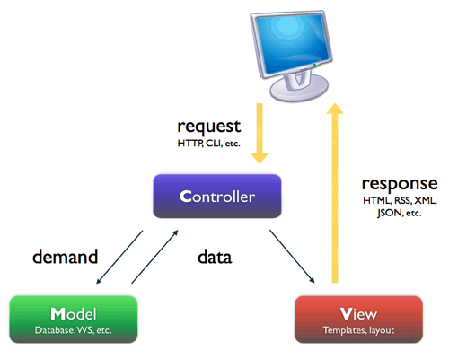

Workshop
Symfony2
Creación de un blog con symfony2
Contraseña wifi

- Essid: ucAirPublica
- Contraseña essid: caminantenohaycamino
- Nombre de usuario: ucongreso03
- Clave de acceso: c668938
¿Qué es symfony2?
Symfony is a PHP Web Development Framework.
That doesn’t answer your question?
Ok, let’s try that again.
Symfony is a PHP Framework, a Philosophy, and a Community - all working together in harmony.
symfony.com
It is written with speed and flexibility in mind. It allows developers to build better and easy to maintain websites with PHP.
symfony.com
Symfony2
vs
Symfony2-standard
Symfony2
Symfony2 realmente no es un framework, son una serie de librerías desacopladas que realizan labores específicas, llamados componentes, con los cuales puedes realizar tu propio framework
Symfony2-standard
Symfony2-standard, es el framework resultante de unir los componentes de symfony2, junto con algunos componentes de terceros, siendo todos estos componentes bundelizados
Definición de algunos términos
bundle: Un bundle no es más que un directorio que tiene una estructura definida que puede alojar cualquier cosa, desde clases para los controladores y recursos web.
YAML: YAML Ain't Another Markup Language, es un lenguaje de marcado ligero más información
MVC: Modelo-Vista-Controlador, es un patrón de diseño

- Modelo: Capa de datos.
- vista: Se encarga de mostrar la interfaz del usuario.
- controlador: Dónde se realiza la lógica de negocio.
Estandar PSR-0 Es un estandar de php, para facilitar la integración de librerias de terceros, se basa en usar una estructura específica en el espacio de nombres (namespace), y también para el nombre de los archivos. más información
Composer

Dependency Manager for PHP
¿Qué es?
Es un archivo phar (archivos php empaquetados), el cual hace uso del componente console de symfony2, el cual sirve, para descargar las dependencias de una librería, mediante un archivo de configuración composer.json
Packagist
Es la página dónde se cuelgan los paquetes, con unos archivos de configuración en el cual les dice, de que paquetes dependen y dónde pueden encontrarlos

Comandos más relevantes de composer
- install instalará todos los paquetes mencionados en el archivo composer.json, en caso de no existir el archivo composer.lock (versiones bloqueados de los paquetes)
- update instalará todos los paquetes mencionados en el archivo composer.json y actualizará el archivo composer.lock, con las última versión de los paquetes
- require instala un paquete
- show muestra información sobre un paquete dado
- search busca un paquete en el repositorio de packagist
Twig
Sistema de plantillas

Sintaxis twig
{% extends "plantilla" %}
{% block "nombre_bloque" %}
{% for item in seq %}
{% endfor %}
{% if condition %}{% endif %}
{{ objeto.atributo }}
Doctrine2
Es el ORM por defecto en symfony2, distribución standard.
¿Qué es un ORM?
Es una técnica de programación para convertir datos entre el sistema de tipos (modelos), utilizado en un lenguaje de programación orientado a objetos y el utilizado en una base de datos relacional, utilizando un motor de persistencia.
¿cómo se crea la base de datos?
- Via YAML
- Vía XML
- Vía anotaciones
Relaciones que permite implementar
- una a una
- una a varios
- varios a varios
Métodos mágicos
Te permite hacer llamadas a la base de datos, delímitándolos por campos
- findBy*
- findByOneBy*
Sentencias DQL (Doctrine query lenguage)
- Parecido a HQL (Hibernate query lenguage)
- Permite hacer select, update y delete
- Es orientación a objetos
Ejemplo:
SELECT u FROM MyProject\Model\User u WHERE u.age > 20
Enlaces
- Knpbundles índice de bundles de symfony2
- Symfony.com Web oficial de symfony2
- Symfony.es Symfony en castellano
- Cheat Sheet sf2
Proyecto a realizar ...
Un blog!!!
Orden del día ...
- Instalación de symfony2 con composer
- Explicar las partes de symfony2
- Instalación de Bundle de terceros
- Creación de Bundles
- Consola de symfony2
- Doctrine2, en symfony2 (entidades, relaciones, ciclo de vida)
- Sistema de plantillas twig, en symfony2
- Formularios
- Routing
- Swiftmailer
- Assetics
One more thing ...
- Listeners
- Crear métodos en twig
- Capifony (deploy)
- Symfony Admingenerator